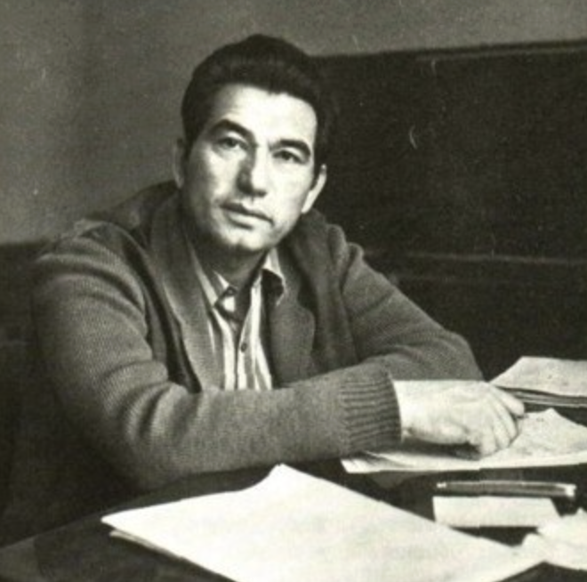

Although Aitmatov was ethnically Kyrgyz and wrote some of his early works in Kyrgyz, by the 1970s he frequently composed major novels directly in Russian to reach the wider Soviet readership. The Day Lasts More Than a Hundred Years (also translated as The Day Lasts Longer than a Century) was first published in Russian in the Soviet literary journal Novy Mir.